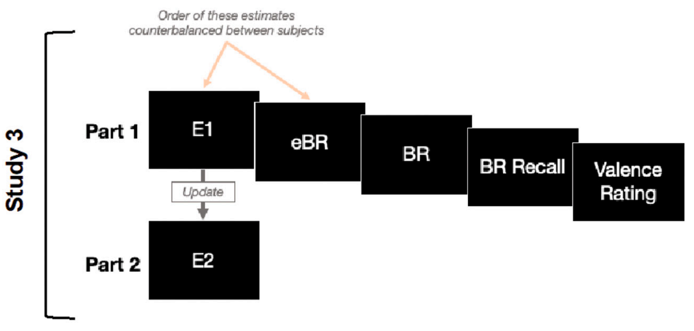
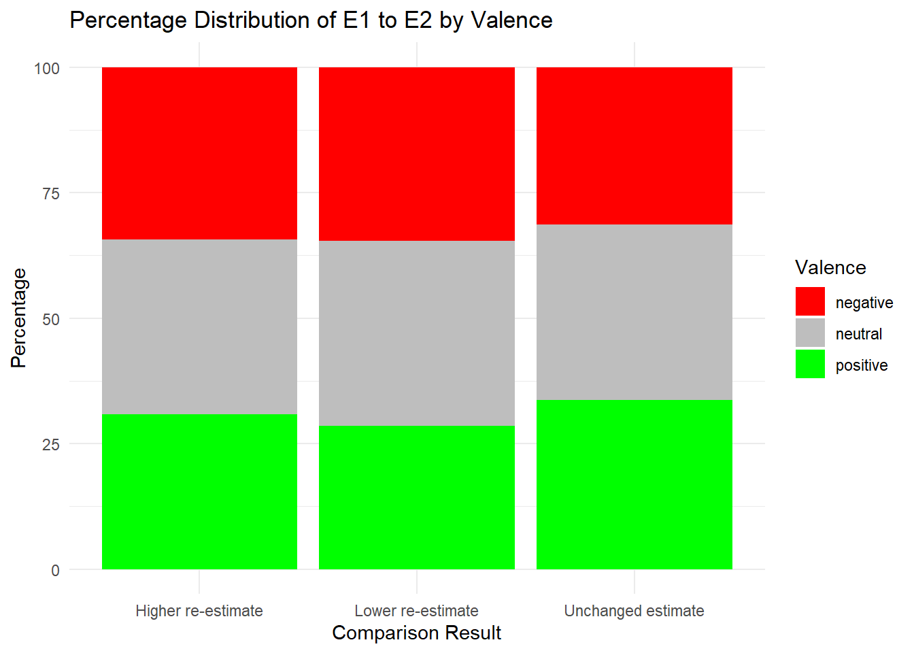
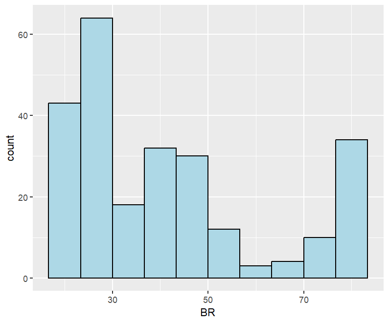

knitr::opts_chunk$set(message = FALSE, warning = FALSE)
# Load packages
library(coefplot)
library(dplyr)
library(ggplot2)
library(kableExtra)
library(knitr)
library(lattice)
library(lme4)
library(lmerTest)
library(rprojroot)
library(stats)
library(tidyverse)PSYC 593: Project
Evaluation of Belief Update Bias for Neutral Events and Other Features of Burton et al. (2022) and Garrett and Sharot (2023) Datasets
# Path variables
# This is the root/working directory
root_path <- rprojroot::find_root(has_dir("doc"))
# These are the subdirectories
docs_path <- file.path(root_path, "doc")
raw_data_path <- file.path(root_path, "data", "raw_data")
clean_data_path <- file.path(root_path, "data", "clean_data")
figures_path <- file.path(root_path, "results", "figures")
tables_path <- file.path(root_path, "results", "tables")
images_path <- file.path(root_path, "images")Introduction
Unrealistic optimism is the tendency to overestimate the likelihood of positive or desirable events and to underestimate the likelihood of negative or undesirable events, and it was popularized by Weinstein (1980). Weinstein (1980) asked students to estimate how much their own chances of experiencing events differed from the chances pertaining to their classmates. He found that the students rated their own chances of experiencing events to be significantly above average for positive events and significantly below average for negative events (Weinstein, 1980). Additionally, he found that the degree of desirability of an event, the perceived probability of an event, personal experience, the personal controllability of an event, and the salience of any available stereotypes influenced the amount of optimistic bias invoked by different events (Weinstein, 1980). Unrealistic optimism influences human decision-making across a variety of domains, so understanding what gives rise to it is crucial for developing methods to mitigate it.
How people update their beliefs when faced with new information is integral to daily life. Burton et al. (2022) reported that a substantial amount of the literature suggests that people’s belief updating is optimistically biased, meaning that their beliefs are updated more in response to good news than bad news. However, recent research found that findings that were consistent with this claim might have been due to flaws in experimental design, rather than motivated reasoning pertaining to optimistic belief (Burton et al., 2022). Considering the controversial nature of this issue, Burton et al. (2022) conducted three pre-registered variations of the standard belief updating paradigm (combined N = 300) in which they tested for asymmetric belief updating with neutral, non-valenced stimuli using analytic approaches found in previous research. They found evidence of seemingly biased belief updating with neutral stimuli, and this suggested that their results could not be attributed to a motivational, valenced-based, optimism account (Burton et al., 2022). In addition, they also demonstrated that there exists uninterpretable variability across samples and analytic techniques (Burton et al., 2022). Overall, Burton et al. (2022) sought to call attention to the methodological flaws in optimistic belief updating research at the time.
Additionally, Burton et al. (2022) claimed that participants demonstrated a greater degree of belief updating in situations where they learned that neutral events were less likely to obtain when compared to situations where they learned that neutral events were more likely to obtain (Garrett & Sharot, 2023). They took this to mean that the optimistic update bias that they found when examining belief updating for positive and/or negative events was not genuine. However, Garrett and Sharot (2023) noted that, instead of using the classic task associated with the standard belief updating paradigm, Burton et al. (2022) used an alternative version of the task, and that in this alternative version the response scale, the distribution of probability base rates, and other features of the task were altered. Such alterations have previously been found to introduce confounds which could lead to false positives (Garrett & Sharot, 2023). Garrett and Sharot (2023) investigated Burton et al. (2022)’s findings and determined that Burton et al. (2022)’s data did not actually support a belief update bias for neutral events. In addition, they found evidence that suggested that the way that Burton et al. (2022) conducted their studies introduced confounds in their design and analysis (Garrett & Sharot, 2023). In an attempt to replicate what Burton et al. (2022) found, Garrett and Sharot (2023) obtained a new dataset utilizing the original belief update task design (so, an unconfounded set of stimuli), but with neutral events. Garrett and Sharot (2023) did not find a belief update bias for neutral events.
Problem Statement
Clearly, while the existence of unrealistic optimism is irrefutable, the existence of an belief update bias pertaining to neutral, non-valenced events is up for debate. To address this, I will independently determine if there is a belief update bias for neutral events using the data from both Burton et al. (2022) and Garrett and Sharot (2023). Additionally, I will carry out some miscellaneous analyses on the relevant datasets to arrive at a more intimate understanding of the data directly.
The variables from the Burton et al. (2022) studies that will be consulted throughout this project are Participant, Event, Valence, E1, eBR, BR, and E2. Additionally, I will create both direction and update variables that correspond to the variables of the same name from the Garrett and Sharot (2023) study. The variables from the Garrett and Sharot (2023) study that will be consulted throughout this project are Participant, Event, E1, eBR, BR, Valence, E2, direction, and update.
Research Questions
The following research questions are investigated within the scope of this project:
What percentage of events did participants determine were negative, neutral, or positive?
What percentage of events did participants initially overestimate/underestimate happening to themselves/the average person in the population relative to the event’s base rate with respect to the event’s valence?
What percentage of events did participants assign a higher/lower/unchanged re-estimate of happening to themselves relative to the event’s base rate, after being told the event’s base rate, with respect to the event’s valence?
What is the mean update in each of the
directionconditions (downwards/equal/upwards)?Partial replication of Garrett and Sharot (2023): Does there actually exist a belief update bias for neutral events (using Burton et al. (2022)’s study data)?
Source and Description of Data
The data for Burton et al. (2022) can be accessed at https://osf.io/8q74m/. One hundred participants were recruited for each study, and three studies were conducted in total (combined N = 300). Burton et al. (2022) arrived at the sample size of 100 because a hypothetical power analysis with 51 stimuli (the number of events used), an effect d of 0.5, and 100 participants returned a high power of 0.84. This was also roughly double the sample size used in Marks and Baines (2017), which is the only other optimistic belief updating study that uses the same main analysis (a linear mixed-effects model). The Prolific Academic online research platform was used for recruitment, and the participant pool location was restricted to the United Kingdom because the stimuli (the life events and base rate statistics) were compiled to suit this specific population, and certain events and base rates may not be relevant to participants living elsewhere. The samples for each study were independent of one another. In Study 1, participants’ ages ranged from 18 to 81 (M = 32.82, SD = 11.52) with 73 females; in Study 2, ages ranged from 18 to 67 (M = 33.29, SD = 10.31) with 78 females; and in Study 3, ages ranged from 19 to 73 (M = 36.09, SD = 12.06) with 80 females.
The data for Garrett and Sharot (2023) can be accessed at https://osf.io/48v6z/. One hundred participants were recruited via the online platform Prolific. The sample size is the same as the one used in Experiments 1–3 by Burton et al. (2022). Participants’ gender composition and age ranges were not reported.
About Burton et al. (2022) Procedure
In Study 1, for all the events presented, participants made an initial self-estimate pertaining to the probability of an event obtaining (E1), made an estimate of its base rate (eBR), viewed its base rate (BR), wrote down its base rate correctly (BR Recall), made a revised self-estimate (E2), and rated the event’s valence on a five-point Likert scale where a rating of 3 indicated that the event was perceived as neutral (Valence Rating). The order of the E1 and eBR estimates were counterbalanced between subjects. The same stimuli were used in each study.
In Study 2, everything was kept the same relative to Study 1 with the exception that the E2s for all events were recorded in a second, separate part of the study after going through everything in the first part.
In Study 3, everything was kept the same relative to Study 2 with the exception that the ordering of E2 and Valence Rating were swapped such that the updating occurred across the two parts.

About Garrett and Sharot (2023) Procedure
On each trial, participants were presented with a short description of 1–39 events and asked to estimate how likely the particular event was to occur to them. Estimates were entered into a text box displayed on the computer screen using a computer keyboard on a scale between 3% and 77%. Participants were then asked to estimate how likely the event was to occur on average in the population on the same scale. They were then presented with the average probability of that event occurring to a person like themselves. Finally, participants were asked to rate how negative or positive they found the event on a five-point scale (1 = very negative, 2 = negative, 3 = neural, 4 = positive, 5 = very positive). In a second session, participants were asked to re-estimate how likely the event was to occur to them.
Description of Variables
Variables in Burton et al. (2022)
Participant: The ID of the participant. It is represented in R as an integer.
Event: The ID of the life event the participant is being asked about. It is represented in R as an integer.
Valence: The participant’s rating on how negative or positive they found the event on a five-point scale (1 and 2 = negative, 3 = neutral, 4 and 5 = positive). It is recorded as a self-report question. It is represented in R as an integer.
E1: The participant’s estimate of how likely the event was to happen to them. Participants could enter responses between 0% and 100%, inclusive. It is recorded as a self-report question. It is represented in R as an integer.
eBR: The participant’s estimate of how likely the event was to happen to the average person in the population. Participants could enter responses between 0% and 100%, inclusive. It is recorded as a self-report question. It is represented in R as an integer.
BR: The base rate statistic of the event. It is recorded with respect to whatever the source of the value stated. It is represented in R as an integer.
E2: The participant’s re-estimate of how likely the event was to happen to them. Like before, participants could enter responses between 0% and 100%, inclusive. It is recorded as a self-report question. It is represented in R as an integer.
Variables in Garrett and Sharot (2023)
Participant: The ID of the participant. It is represented in R as an integer.
Event: The ID of the life event the participant is being asked about. It is represented in R as an integer.
E1: The participant’s estimate of how likely the event was to happen to them. Participants were instructed to only enter responses between 3% and 77%, inclusive. It is recorded as a self-report question. It is represented in R as an integer.
eBR: The participant’s estimate of how likely the event was to happen to the average person in the population. Participants were instructed to only enter responses between 3% and 77%, inclusive. It is recorded as a self-report question. It is represented in R as an integer.
BR: The base rate statistic of the event happening to someone from the same socioeconomic environment as the participant. This ranged from 10% to 70%, inclusive. It is recorded with respect to whatever the source of the value stated. It is represented in R as an integer.
Valence: The participant’s rating on how negative or positive they found the event on a five-point scale (1 = very negative, 2 = negative, 3 = neutral, 4 = positive, 5 = very positive). It is recorded as a self-report question. It is represented in R as an integer.
E2: The participant’s re-estimate of how likely the event was to happen to them. Like before, participants were instructed to only enter responses between 3% and 77%, inclusive. It is recorded as a self-report question. It is represented in R as an integer.
direction: Participants could either receive information in a “downwards direction” or an “upwards direction” depending on whether the participant initially overestimated or underestimated the probability of the event relative to the base rate, respectively. Specifically, if their first estimate (E1) was higher than the base rate presented (BR), then the information would be categorized as “downwards” and if their first estimate (E1) was lower than the base rate presented (BR), then the information would be categorized as “upwards”. So, direction was coded as “−1” in the case of initial overestimation, “1” in the case of initial underestimation, and “NA” in the case where the initial estimate was equal to the statistic presented. It is represented in R as an integer.
update: The result of the computation E1 − E2. A value of “NA” was recorded when participants’ first estimate (E1) was equal to the base rate presented (BR). It is represented in R as an integer.
Data Manipulation
There are three datasets from Burton et al. (2022) and one from Garrett and Sharot (2023) to read in. I changed the filename of each dataset so that it was more explicit which study the particular dataset pertained to and so that it fit R file naming conventions. Each dataset is a CSV (comma-separated values) file, so no special steps need to be taken to read the data in properly. I can read in the datasets:
# Read data
burton_et_al_2022_study1_data <- read.csv(file = file.path(raw_data_path, "burton_et_al_2022_study1.csv"))
burton_et_al_2022_study2_data <- read.csv(file = file.path(raw_data_path, "burton_et_al_2022_study2.csv"))
burton_et_al_2022_study3_data <- read.csv(file = file.path(raw_data_path, "burton_et_al_2022_study3.csv"))
garrett_and_sharot_2023_data <- read.csv(file = file.path(raw_data_path, "garrett_and_sharot_2023.csv"))To create the direction variable in the Burton et al. (2022) datasets that correspond to the variable of the same name from the Garret and Sharot (2023) dataset, I wrote the following R code:
# Add "direction" variable in burton_et_al_2022_study#_data datasets
burton_et_al_2022_study1_data_with_direction <- mutate(burton_et_al_2022_study1_data, direction = case_when(
E1 > BR ~ "-1",
E1 == BR ~ "0",
E1 < BR ~ "1"
))
burton_et_al_2022_study2_data_with_direction <- mutate(burton_et_al_2022_study2_data, direction = case_when(
E1 > BR ~ "-1",
E1 == BR ~ "0",
E1 < BR ~ "1"
))
burton_et_al_2022_study3_data_with_direction <- mutate(burton_et_al_2022_study3_data, direction = case_when(
E1 > BR ~ "-1",
E1 == BR ~ "0",
E1 < BR ~ "1"
))To create the update variable in the Burton et al. (2022) datasets that correspond to the variable of the same name from the Garret and Sharot (2023) dataset, I wrote the following R code:
# Add "update" variable in burton_et_al_2022_study#_data_with_direction datasets
burton_et_al_2022_study1_data_with_direction_and_update <- mutate(burton_et_al_2022_study1_data_with_direction, update = E1 - E2)
burton_et_al_2022_study2_data_with_direction_and_update <- mutate(burton_et_al_2022_study2_data_with_direction, update = E1 - E2)
burton_et_al_2022_study3_data_with_direction_and_update <- mutate(burton_et_al_2022_study3_data_with_direction, update = E1 - E2)I noticed that there were missing values (NAs) in the “garrett_and_sharot_2023_data” dataset, but in the specified context these NAs should have been 0s:
# Replace missing values (NAs) with the value "0" when reading garrett_and_sharot_2023_data into R
garrett_and_sharot_2023_data_with_no_missing_values <- read.csv(
file.path(raw_data_path, "garrett_and_sharot_2023.csv"),
na.strings = c("NA", "N/A")
) %>%
mutate_all(~replace(., is.na(.), 0))After conducting these data manipulations, I could then write these cleaned datasets to the “clean_data” subdirectory and proceed with my analyses:
# Write cleaned datasets to the "clean_data" subdirectory
write.csv(burton_et_al_2022_study1_data_with_direction_and_update, file = file.path(clean_data_path, "burton_et_al_2022_study1_data_with_direction_and_update.csv"), row.names = FALSE)
write.csv(burton_et_al_2022_study2_data_with_direction_and_update, file = file.path(clean_data_path, "burton_et_al_2022_study2_data_with_direction_and_update.csv"), row.names = FALSE)
write.csv(burton_et_al_2022_study3_data_with_direction_and_update, file = file.path(clean_data_path, "burton_et_al_2022_study3_data_with_direction_and_update.csv"), row.names = FALSE)
write.csv(garrett_and_sharot_2023_data_with_no_missing_values, file = file.path(clean_data_path, "garrett_and_sharot_2023_data_with_no_missing_values.csv"), row.names = FALSE)Analyses
Question 1
The first question that I wanted to answer was “What percentage of events did participants determine were negative, neutral, or positive?”
First, I needed to create a table of frequencies and their percentages pertaining to the valence of events. For Study 1 of Burton et al. (2022), this looked as follows:
# Create table of percentages pertaining to the valence of events from Burton et al. (2022) Study 1
burton_et_al_2022_study1_data_with_direction_and_update_valence_percentage_distribution <- burton_et_al_2022_study1_data_with_direction_and_update %>%
group_by(Valence) %>%
summarise(count = n()) %>%
mutate(percentage = (count / sum(count)) * 100) %>%
rename(Count = count, Percentage = percentage)
# Run the function
burton_et_al_2022_study1_data_with_direction_and_update_valence_percentage_distribution# A tibble: 5 × 3
Valence Count Percentage
<int> <int> <dbl>
1 1 587 11.5
2 2 1184 23.2
3 3 1618 31.7
4 4 1065 20.9
5 5 646 12.7While this created a tibble, I wanted to create a more standard-looking table. I did this using the kable() function:
# Create a table of percentages pertaining to the valence of events from Burton et al. (2022) Study 1
burton_et_al_2022_study1_data_with_direction_and_update_valence_percentage_distribution_html <- kable(burton_et_al_2022_study1_data_with_direction_and_update_valence_percentage_distribution,
caption = "Table 1: Frequency and Percentage Distributions of Valence in Burton et al. (2022) Study 1 Data")
# Save the table to the "tables" subdirectory
output_folder <- file.path(tables_path)
output_file <- file.path(output_folder, "burton_et_al_2022_study1_data_with_direction_and_update_valence_percentage_distribution.html")
writeLines(as.character(burton_et_al_2022_study1_data_with_direction_and_update_valence_percentage_distribution_html), con = output_file)
# Run the function
burton_et_al_2022_study1_data_with_direction_and_update_valence_percentage_distribution_html| Valence | Count | Percentage |
|---|---|---|
| 1 | 587 | 11.50980 |
| 2 | 1184 | 23.21569 |
| 3 | 1618 | 31.72549 |
| 4 | 1065 | 20.88235 |
| 5 | 646 | 12.66667 |
To visualize these data, I created a bar plot:
# Create bar plot pertaining to the valence percentages of events from Burton et al. (2022) Study 1
bar_plot_of_burton_et_al_2022_study1_data_with_direction_and_update_valence_percentage_distribution <- ggplot(burton_et_al_2022_study1_data_with_direction_and_update_valence_percentage_distribution, aes(x = Valence, y = Percentage, fill = Valence)) +
geom_bar(stat = "identity") +
labs(title = "Distribution of Valence Values",
x = "Valence",
y = "Percentage") +
theme_minimal()
# Specify the file path for saving the bar plot
output_file_path <- file.path(figures_path, "bar_plot_of_burton_et_al_2022_study1_data_with_direction_and_update_valence_percentage_distribution.png")
# Save the bar plot
ggsave(output_file_path, plot = bar_plot_of_burton_et_al_2022_study1_data_with_direction_and_update_valence_percentage_distribution)
# Run the function
bar_plot_of_burton_et_al_2022_study1_data_with_direction_and_update_valence_percentage_distributionHowever, to have this capture the valences in broader categories, I mutated the valence of events such that the valences of 1 and 2 were both “negative”, 3 were “neutral”, and 4 and 5 were both “positive”:
# Mutate the valence of events such that valences of 1 and 2 are both "negative", 3 are "neutral", and 4 and 5 are both "positive" from Burton et al. (2022) Study 1
burton_et_al_2022_study1_data_with_direction_and_update_with_mutated_valences <- burton_et_al_2022_study1_data_with_direction_and_update %>%
mutate(
Valence = ifelse(Valence %in% c("1", "2"), "negative",
ifelse(Valence == "3", "neutral",
ifelse(Valence %in% c("4", "5"), "positive", Valence)))
)# Create table of percentages pertaining to the mutated valence of events from Burton et al. (2022) Study 1
burton_et_al_2022_study1_data_with_direction_and_update_with_mutated_valences_valence_percentage_distribution <- burton_et_al_2022_study1_data_with_direction_and_update_with_mutated_valences %>%
group_by(Valence) %>%
summarise(count = n()) %>%
mutate(percentage = (count / sum(count)) * 100) %>%
rename(Count = count, Percentage = percentage)
# Run the function
burton_et_al_2022_study1_data_with_direction_and_update_with_mutated_valences_valence_percentage_distribution# A tibble: 3 × 3
Valence Count Percentage
<chr> <int> <dbl>
1 negative 1771 34.7
2 neutral 1618 31.7
3 positive 1711 33.5# Create a table of percentages pertaining to the mutated valence of events from Burton et al. (2022) Study 1
burton_et_al_2022_study1_data_with_direction_and_update_with_mutated_valences_valence_percentage_distribution_html <- kable(burton_et_al_2022_study1_data_with_direction_and_update_with_mutated_valences_valence_percentage_distribution,
caption = "Table 2: Frequency and Percentage Distributions of Mutated Valence in Burton et al. (2022) Study 1 Data")
# Save the table to the "tables" subdirectory
output_folder <- file.path(tables_path)
output_file <- file.path(output_folder, "burton_et_al_2022_study1_data_with_direction_and_update_with_mutated_valences_valence_percentage_distribution.html")
writeLines(as.character(burton_et_al_2022_study1_data_with_direction_and_update_with_mutated_valences_valence_percentage_distribution_html), con = output_file)
# Run the function
burton_et_al_2022_study1_data_with_direction_and_update_with_mutated_valences_valence_percentage_distribution_html| Valence | Count | Percentage |
|---|---|---|
| negative | 1771 | 34.72549 |
| neutral | 1618 | 31.72549 |
| positive | 1711 | 33.54902 |
# Create bar plot pertaining to the mutated valence percentages of events from Burton et al. (2022) Study 1
bar_plot_of_burton_et_al_2022_study1_data_with_direction_and_update_with_mutated_valences_valence_percentage_distribution <- ggplot(burton_et_al_2022_study1_data_with_direction_and_update_with_mutated_valences_valence_percentage_distribution, aes(x = Valence, y = Percentage, fill = Valence)) +
geom_bar(stat = "identity") +
labs(title = "Distribution of Valence Values",
x = "Valence",
y = "Percentage") +
theme_minimal()
# Specify the file path for saving the bar plot
output_file_path <- file.path(figures_path, "bar_plot_of_burton_et_al_2022_study1_data_with_direction_and_update_with_mutated_valences_valence_percentage_distribution.png")
# Save the bar plot
ggsave(output_file_path, plot = bar_plot_of_burton_et_al_2022_study1_data_with_direction_and_update_with_mutated_valences_valence_percentage_distribution)
# Run the function
bar_plot_of_burton_et_al_2022_study1_data_with_direction_and_update_with_mutated_valences_valence_percentage_distributionI repeated this procedure for Study 2 of Burton et al. (2022), Study 3 of Burton et al. (2022), and the Garrett and Sharot (2023) study:
Burton et al. (2022) Study 2
# A tibble: 5 × 3
Valence Count Percentage
<int> <int> <dbl>
1 1 525 10.3
2 2 1178 23.1
3 3 1813 35.5
4 4 991 19.4
5 5 593 11.6| Valence | Count | Percentage |
|---|---|---|
| 1 | 525 | 10.29412 |
| 2 | 1178 | 23.09804 |
| 3 | 1813 | 35.54902 |
| 4 | 991 | 19.43137 |
| 5 | 593 | 11.62745 |
Mutating valences…
# A tibble: 3 × 3
Valence Count Percentage
<chr> <int> <dbl>
1 negative 1703 33.4
2 neutral 1813 35.5
3 positive 1584 31.1| Valence | Count | Percentage |
|---|---|---|
| negative | 1703 | 33.39216 |
| neutral | 1813 | 35.54902 |
| positive | 1584 | 31.05882 |
Burton et al. (2022) Study 3
# A tibble: 4 × 3
Valence Count Percentage
<int> <int> <dbl>
1 2 1730 33.9
2 3 1804 35.4
3 4 1095 21.5
4 5 471 9.24| Valence | Count | Percentage |
|---|---|---|
| 2 | 1730 | 33.921569 |
| 3 | 1804 | 35.372549 |
| 4 | 1095 | 21.470588 |
| 5 | 471 | 9.235294 |
Mutating valences…
# A tibble: 3 × 3
Valence Count Percentage
<chr> <int> <dbl>
1 negative 1730 33.9
2 neutral 1804 35.4
3 positive 1566 30.7| Valence | Count | Percentage |
|---|---|---|
| negative | 1730 | 33.92157 |
| neutral | 1804 | 35.37255 |
| positive | 1566 | 30.70588 |
Garrett and Sharot (2023) Study
# A tibble: 5 × 3
Valence Count Percentage
<dbl> <int> <dbl>
1 1 175 4.49
2 2 562 14.4
3 3 1952 50.1
4 4 962 24.7
5 5 249 6.38| Valence | Count | Percentage |
|---|---|---|
| 1 | 175 | 4.487179 |
| 2 | 562 | 14.410256 |
| 3 | 1952 | 50.051282 |
| 4 | 962 | 24.666667 |
| 5 | 249 | 6.384615 |
Mutating valences…
# A tibble: 3 × 3
Valence Count Percentage
<chr> <int> <dbl>
1 negative 737 18.9
2 neutral 1952 50.1
3 positive 1211 31.1| Valence | Count | Percentage |
|---|---|---|
| negative | 737 | 18.89744 |
| neutral | 1952 | 50.05128 |
| positive | 1211 | 31.05128 |
Question 2
The second question that I wanted to answer was “What percentage of events did participants initially overestimate/underestimate happening to themselves/the average person in the population relative to the event’s base rate with respect to the event’s valence?”
First, I needed to create a table of frequencies and their percentages pertaining to the initial overestimation/underestimation of the probability of events happening to participants themselves relative to the base rate of the events. For Study 1 of Burton et al. (2022), this looked as follows:
# Create frequency and percentage distributions pertaining to the initial overestimation/underestimation of the probability of events happening to participants themselves relative to the base rate of the events from Burton et al. (2022) Study 1
burton_et_al_2022_study1_data_with_direction_and_update_with_mutated_valences_E1_to_BR_frequency_and_percentage_distribution <- burton_et_al_2022_study1_data_with_direction_and_update_with_mutated_valences %>%
mutate(comparison_result = factor(case_when(
E1 > BR ~ "Initial overestimation",
E1 < BR ~ "Initial underestimation",
E1 == BR ~ "No overestimation or underestimation"
), levels = c("Initial overestimation", "Initial underestimation", "No overestimation or underestimation"))) %>%
group_by(comparison_result, Valence) %>%
summarise(frequency = n()) %>%
mutate(percentage = (frequency / sum(frequency)) * 100) %>%
rename(Frequency = frequency, Percentage = percentage)
# Run the function
burton_et_al_2022_study1_data_with_direction_and_update_with_mutated_valences_E1_to_BR_frequency_and_percentage_distribution# A tibble: 9 × 4
# Groups: comparison_result [3]
comparison_result Valence Frequency Percentage
<fct> <chr> <int> <dbl>
1 Initial overestimation negative 702 29.5
2 Initial overestimation neutral 726 30.5
3 Initial overestimation positive 953 40.0
4 Initial underestimation negative 1051 39.5
5 Initial underestimation neutral 869 32.7
6 Initial underestimation positive 738 27.8
7 No overestimation or underestimation negative 18 29.5
8 No overestimation or underestimation neutral 23 37.7
9 No overestimation or underestimation positive 20 32.8Again, I wanted to create a more standard-looking table:
# Create frequency and percentage distributions pertaining to the initial overestimation/underestimation of the probability of events happening to participants themselves relative to the base rate of the events from Burton et al. (2022) Study 1
burton_et_al_2022_study1_data_with_direction_and_update_with_mutated_valences_E1_to_BR_frequency_and_percentage_distribution_html <- kable(burton_et_al_2022_study1_data_with_direction_and_update_with_mutated_valences_E1_to_BR_frequency_and_percentage_distribution,
caption = "Table 9: Frequency and Percentage Distributions of E1 to BR by Valence in Burton et al. (2022) Study 1 Data")
# Save the table to the "tables" subdirectory
output_folder <- file.path(tables_path)
output_file <- file.path(output_folder, "burton_et_al_2022_study1_data_with_direction_and_update_with_mutated_valences_E1_to_BR_frequency_and_percentage_distribution.html")
writeLines(as.character(burton_et_al_2022_study1_data_with_direction_and_update_with_mutated_valences_E1_to_BR_frequency_and_percentage_distribution_html), con = output_file)
# Run the function
burton_et_al_2022_study1_data_with_direction_and_update_with_mutated_valences_E1_to_BR_frequency_and_percentage_distribution_html| comparison_result | Valence | Frequency | Percentage |
|---|---|---|---|
| Initial overestimation | negative | 702 | 29.48341 |
| Initial overestimation | neutral | 726 | 30.49139 |
| Initial overestimation | positive | 953 | 40.02520 |
| Initial underestimation | negative | 1051 | 39.54101 |
| Initial underestimation | neutral | 869 | 32.69375 |
| Initial underestimation | positive | 738 | 27.76524 |
| No overestimation or underestimation | negative | 18 | 29.50820 |
| No overestimation or underestimation | neutral | 23 | 37.70492 |
| No overestimation or underestimation | positive | 20 | 32.78689 |
To visualize these data, I created a stacked bar plot:
# Create stacked bar plot pertaining to the initial overestimation/underestimation of the probability of events happening to participants themselves relative to the base rate of the events from Burton et al. (2022) Study 1
stacked_bar_plot_of_burton_et_al_2022_study1_data_with_direction_and_update_with_mutated_valences_E1_to_BR_frequency_and_percentage_distribution <- ggplot(burton_et_al_2022_study1_data_with_direction_and_update_with_mutated_valences_E1_to_BR_frequency_and_percentage_distribution, aes(x = comparison_result, y = Percentage, fill = Valence)) +
geom_bar(stat = "identity") +
labs(title = "Percentage Distribution of E1 to BR by Valence",
x = "Comparison Result",
y = "Percentage",
fill = "Valence") +
scale_fill_manual(values = c("negative" = "red", "neutral" = "gray", "positive" = "green")) +
scale_x_discrete(labels = c("Initial overestimation" = "Overestimation",
"Initial underestimation" = "Underestimation",
"No overestimation or underestimation" = "Neither")) +
theme_minimal()
# Specify the file path for saving the stacked bar plot
output_file_path <- file.path(figures_path, "stacked_bar_plot_of_burton_et_al_2022_study1_data_with_direction_and_update_with_mutated_valences_E1_to_BR_frequency_and_percentage_distribution.png")
# Save the stacked bar plot
ggsave(output_file_path, plot = stacked_bar_plot_of_burton_et_al_2022_study1_data_with_direction_and_update_with_mutated_valences_E1_to_BR_frequency_and_percentage_distribution)
# Run the function
stacked_bar_plot_of_burton_et_al_2022_study1_data_with_direction_and_update_with_mutated_valences_E1_to_BR_frequency_and_percentage_distributionParticipants initially overestimated the likelihood of events that they considered positive happening to them more often than any other valence of an event and initially underestimated the likelihood of events that they considered negative happening to them more often than any other valence of an event.
I repeated this procedure for Study 2 of Burton et al. (2022), Study 3 of Burton et al. (2022), and the Garrett and Sharot (2023) study:
Burton et al. (2022) Study 2
# A tibble: 9 × 4
# Groups: comparison_result [3]
comparison_result Valence Frequency Percentage
<fct> <chr> <int> <dbl>
1 Initial overestimation negative 713 28.1
2 Initial overestimation neutral 896 35.3
3 Initial overestimation positive 928 36.6
4 Initial underestimation negative 972 38.8
5 Initial underestimation neutral 893 35.7
6 Initial underestimation positive 637 25.5
7 No overestimation or underestimation negative 18 29.5
8 No overestimation or underestimation neutral 24 39.3
9 No overestimation or underestimation positive 19 31.1| comparison_result | Valence | Frequency | Percentage |
|---|---|---|---|
| Initial overestimation | negative | 713 | 28.10406 |
| Initial overestimation | neutral | 896 | 35.31730 |
| Initial overestimation | positive | 928 | 36.57864 |
| Initial underestimation | negative | 972 | 38.84892 |
| Initial underestimation | neutral | 893 | 35.69145 |
| Initial underestimation | positive | 637 | 25.45963 |
| No overestimation or underestimation | negative | 18 | 29.50820 |
| No overestimation or underestimation | neutral | 24 | 39.34426 |
| No overestimation or underestimation | positive | 19 | 31.14754 |
Similarly to Study 1, participants initially overestimated the likelihood of events that they considered positive happening to them more often than any other valence of an event and initially underestimated the likelihood of events that they considered negative happening to them more often than any other valence of an event.
Burton et al. (2022) Study 3
# A tibble: 9 × 4
# Groups: comparison_result [3]
comparison_result Valence Frequency Percentage
<fct> <chr> <int> <dbl>
1 Initial overestimation negative 652 27.5
2 Initial overestimation neutral 859 36.3
3 Initial overestimation positive 856 36.2
4 Initial underestimation negative 1062 39.7
5 Initial underestimation neutral 916 34.2
6 Initial underestimation positive 697 26.1
7 No overestimation or underestimation negative 16 27.6
8 No overestimation or underestimation neutral 29 50
9 No overestimation or underestimation positive 13 22.4| comparison_result | Valence | Frequency | Percentage |
|---|---|---|---|
| Initial overestimation | negative | 652 | 27.54542 |
| Initial overestimation | neutral | 859 | 36.29066 |
| Initial overestimation | positive | 856 | 36.16392 |
| Initial underestimation | negative | 1062 | 39.70093 |
| Initial underestimation | neutral | 916 | 34.24299 |
| Initial underestimation | positive | 697 | 26.05607 |
| No overestimation or underestimation | negative | 16 | 27.58621 |
| No overestimation or underestimation | neutral | 29 | 50.00000 |
| No overestimation or underestimation | positive | 13 | 22.41379 |
Here, participants initially overestimated the likelihood of events that they considered neutral happening to them more often than any other valence of an event but still initially underestimated the likelihood of events that they considered negative happening to them more often than any other valence of an event.
Garrett and Sharot (2023) Study
# A tibble: 9 × 4
# Groups: comparison_result [3]
comparison_result Valence Frequency Percentage
<fct> <chr> <int> <dbl>
1 Initial overestimation negative 252 14.8
2 Initial overestimation neutral 860 50.6
3 Initial overestimation positive 589 34.6
4 Initial underestimation negative 482 22.4
5 Initial underestimation neutral 1067 49.5
6 Initial underestimation positive 607 28.2
7 No overestimation or underestimation negative 3 6.98
8 No overestimation or underestimation neutral 25 58.1
9 No overestimation or underestimation positive 15 34.9 | comparison_result | Valence | Frequency | Percentage |
|---|---|---|---|
| Initial overestimation | negative | 252 | 14.814815 |
| Initial overestimation | neutral | 860 | 50.558495 |
| Initial overestimation | positive | 589 | 34.626690 |
| Initial underestimation | negative | 482 | 22.356215 |
| Initial underestimation | neutral | 1067 | 49.489796 |
| Initial underestimation | positive | 607 | 28.153989 |
| No overestimation or underestimation | negative | 3 | 6.976744 |
| No overestimation or underestimation | neutral | 25 | 58.139535 |
| No overestimation or underestimation | positive | 15 | 34.883721 |
Here, participants initially both overestimated and underestimated the likelihood of events that they considered neutral happening to them more often than any other valence of an event.
Afterward, I needed to create a table of frequencies and their percentages pertaining to the initial overestimation/underestimation of the probability of events happening to the average person in the population relative to the base rate of the events. For Study 1 of Burton et al. (2022), this looked as follows:
# Create frequency and percentage distributions pertaining to the initial overestimation/underestimation of the probability of events happening to the average person in the population relative to the base rate of the events from Burton et al. (2022) Study 1
burton_et_al_2022_study1_data_with_direction_and_update_with_mutated_valences_eBR_to_BR_frequency_and_percentage_distribution <- burton_et_al_2022_study1_data_with_direction_and_update_with_mutated_valences %>%
mutate(comparison_result = factor(case_when(
E1 > BR ~ "Initial overestimation",
E1 < BR ~ "Initial underestimation",
E1 == BR ~ "No overestimation or underestimation"
), levels = c("Initial overestimation", "Initial underestimation", "No overestimation or underestimation"))) %>%
group_by(comparison_result, Valence) %>%
summarise(frequency = n()) %>%
mutate(percentage = (frequency / sum(frequency)) * 100) %>%
rename(Frequency = frequency, Percentage = percentage)
# Run the function
burton_et_al_2022_study1_data_with_direction_and_update_with_mutated_valences_eBR_to_BR_frequency_and_percentage_distribution# A tibble: 9 × 4
# Groups: comparison_result [3]
comparison_result Valence Frequency Percentage
<fct> <chr> <int> <dbl>
1 Initial overestimation negative 702 29.5
2 Initial overestimation neutral 726 30.5
3 Initial overestimation positive 953 40.0
4 Initial underestimation negative 1051 39.5
5 Initial underestimation neutral 869 32.7
6 Initial underestimation positive 738 27.8
7 No overestimation or underestimation negative 18 29.5
8 No overestimation or underestimation neutral 23 37.7
9 No overestimation or underestimation positive 20 32.8Again, I wanted to create a more standard-looking table:
# Create frequency and percentage distributions pertaining to the initial overestimation/underestimation of the probability of events happening to the average person in the population relative to the base rate of the events from Burton et al. (2022) Study 1
burton_et_al_2022_study1_data_with_direction_and_update_with_mutated_valences_eBR_to_BR_frequency_and_percentage_distribution_html <- kable(burton_et_al_2022_study1_data_with_direction_and_update_with_mutated_valences_eBR_to_BR_frequency_and_percentage_distribution,
caption = "Table 13: Frequency and Percentage Distributions of eBR to BR by Valence in Burton et al. (2022) Study 1 Data")
# Save the table to the "tables" subdirectory
output_folder <- file.path(tables_path)
output_file <- file.path(output_folder, "burton_et_al_2022_study1_data_with_direction_and_update_with_mutated_valences_eBR_to_BR_frequency_and_percentage_distribution.html")
writeLines(as.character(burton_et_al_2022_study1_data_with_direction_and_update_with_mutated_valences_eBR_to_BR_frequency_and_percentage_distribution_html), con = output_file)
# Run the function
burton_et_al_2022_study1_data_with_direction_and_update_with_mutated_valences_eBR_to_BR_frequency_and_percentage_distribution_html| comparison_result | Valence | Frequency | Percentage |
|---|---|---|---|
| Initial overestimation | negative | 702 | 29.48341 |
| Initial overestimation | neutral | 726 | 30.49139 |
| Initial overestimation | positive | 953 | 40.02520 |
| Initial underestimation | negative | 1051 | 39.54101 |
| Initial underestimation | neutral | 869 | 32.69375 |
| Initial underestimation | positive | 738 | 27.76524 |
| No overestimation or underestimation | negative | 18 | 29.50820 |
| No overestimation or underestimation | neutral | 23 | 37.70492 |
| No overestimation or underestimation | positive | 20 | 32.78689 |
To visualize these data, I created a stacked bar plot:
# Create stacked bar plot pertaining to the initial overestimation/underestimation of the probability of events happening to the average person in the population relative to the base rate of the events from Burton et al. (2022) Study 1
stacked_bar_plot_of_burton_et_al_2022_study1_data_with_direction_and_update_with_mutated_valences_eBR_to_BR_frequency_and_percentage_distribution <- ggplot(burton_et_al_2022_study1_data_with_direction_and_update_with_mutated_valences_eBR_to_BR_frequency_and_percentage_distribution, aes(x = comparison_result, y = Percentage, fill = Valence)) +
geom_bar(stat = "identity") +
labs(title = "Percentage Distribution of eBR to BR by Valence",
x = "Comparison Result",
y = "Percentage",
fill = "Valence") +
scale_fill_manual(values = c("negative" = "red", "neutral" = "gray", "positive" = "green")) +
scale_x_discrete(labels = c("Initial overestimation" = "Overestimation",
"Initial underestimation" = "Underestimation",
"No overestimation or underestimation" = "Neither")) +
theme_minimal()
# Specify the file path for saving the stacked bar plot
output_file_path <- file.path(figures_path, "stacked_bar_plot_of_burton_et_al_2022_study1_data_with_direction_and_update_with_mutated_valences_eBR_to_BR_frequency_and_percentage_distribution.png")
# Save the stacked bar plot
ggsave(output_file_path, plot = stacked_bar_plot_of_burton_et_al_2022_study1_data_with_direction_and_update_with_mutated_valences_eBR_to_BR_frequency_and_percentage_distribution)
# Run the function
stacked_bar_plot_of_burton_et_al_2022_study1_data_with_direction_and_update_with_mutated_valences_eBR_to_BR_frequency_and_percentage_distributionParticipants initially overestimated the likelihood of events that they considered positive happening to the average person in the population more often than any other valence of an event and initially underestimated the likelihood of events that they considered negative happening to the average person in the population more often than any other valence of an event.
I repeated this procedure for Study 2 of Burton et al. (2022), Study 3 of Burton et al. (2022), and the Garrett and Sharot (2023) study:
Burton et al. (2022) Study 2
# A tibble: 9 × 4
# Groups: comparison_result [3]
comparison_result Valence Frequency Percentage
<fct> <chr> <int> <dbl>
1 Initial overestimation negative 713 28.1
2 Initial overestimation neutral 896 35.3
3 Initial overestimation positive 928 36.6
4 Initial underestimation negative 972 38.8
5 Initial underestimation neutral 893 35.7
6 Initial underestimation positive 637 25.5
7 No overestimation or underestimation negative 18 29.5
8 No overestimation or underestimation neutral 24 39.3
9 No overestimation or underestimation positive 19 31.1| comparison_result | Valence | Frequency | Percentage |
|---|---|---|---|
| Initial overestimation | negative | 713 | 28.10406 |
| Initial overestimation | neutral | 896 | 35.31730 |
| Initial overestimation | positive | 928 | 36.57864 |
| Initial underestimation | negative | 972 | 38.84892 |
| Initial underestimation | neutral | 893 | 35.69145 |
| Initial underestimation | positive | 637 | 25.45963 |
| No overestimation or underestimation | negative | 18 | 29.50820 |
| No overestimation or underestimation | neutral | 24 | 39.34426 |
| No overestimation or underestimation | positive | 19 | 31.14754 |
Similarly to Study 1, participants initially overestimated the likelihood of events that they considered positive happening to the average person in the population more often than any other valence of an event and initially underestimated the likelihood of events that they considered negative happening to the average person in the population more often than any other valence of an event.
Burton et al. (2022) Study 3
# A tibble: 9 × 4
# Groups: comparison_result [3]
comparison_result Valence Frequency Percentage
<fct> <chr> <int> <dbl>
1 Initial overestimation negative 652 27.5
2 Initial overestimation neutral 859 36.3
3 Initial overestimation positive 856 36.2
4 Initial underestimation negative 1062 39.7
5 Initial underestimation neutral 916 34.2
6 Initial underestimation positive 697 26.1
7 No overestimation or underestimation negative 16 27.6
8 No overestimation or underestimation neutral 29 50
9 No overestimation or underestimation positive 13 22.4| comparison_result | Valence | Frequency | Percentage |
|---|---|---|---|
| Initial overestimation | negative | 652 | 27.54542 |
| Initial overestimation | neutral | 859 | 36.29066 |
| Initial overestimation | positive | 856 | 36.16392 |
| Initial underestimation | negative | 1062 | 39.70093 |
| Initial underestimation | neutral | 916 | 34.24299 |
| Initial underestimation | positive | 697 | 26.05607 |
| No overestimation or underestimation | negative | 16 | 27.58621 |
| No overestimation or underestimation | neutral | 29 | 50.00000 |
| No overestimation or underestimation | positive | 13 | 22.41379 |
Here, participants initially overestimated the likelihood of events that they considered neutral happening to the average person in the population more often than any other valence of an event but still initially underestimated the likelihood of events that they considered negative happening to the average person in the population more often than any other valence of an event.
Garrett and Sharot (2023) Study
# A tibble: 9 × 4
# Groups: comparison_result [3]
comparison_result Valence Frequency Percentage
<fct> <chr> <int> <dbl>
1 Initial overestimation negative 252 14.8
2 Initial overestimation neutral 860 50.6
3 Initial overestimation positive 589 34.6
4 Initial underestimation negative 482 22.4
5 Initial underestimation neutral 1067 49.5
6 Initial underestimation positive 607 28.2
7 No overestimation or underestimation negative 3 6.98
8 No overestimation or underestimation neutral 25 58.1
9 No overestimation or underestimation positive 15 34.9 | comparison_result | Valence | Frequency | Percentage |
|---|---|---|---|
| Initial overestimation | negative | 252 | 14.814815 |
| Initial overestimation | neutral | 860 | 50.558495 |
| Initial overestimation | positive | 589 | 34.626690 |
| Initial underestimation | negative | 482 | 22.356215 |
| Initial underestimation | neutral | 1067 | 49.489796 |
| Initial underestimation | positive | 607 | 28.153989 |
| No overestimation or underestimation | negative | 3 | 6.976744 |
| No overestimation or underestimation | neutral | 25 | 58.139535 |
| No overestimation or underestimation | positive | 15 | 34.883721 |
Here, participants initially both overestimated and underestimated the likelihood of events that they considered neutral happening to the average person in the population more often than any other valence of an event.
Question 3
The third question that I wanted to answer was “What percentage of events did participants assign a higher/lower/unchanged re-estimate of happening to themselves relative to the event’s base rate, after being told the event’s base rate, with respect to the event’s valence?”
First, I needed to create a table of frequencies and their percentages pertaining to the re-estimate of the probability of events happening to participants themselves relative to the base rate of the events. For Study 1 of Burton et al. (2022), this looked as follows:
# Create frequency and percentage distributions pertaining to the re-estimate of the probability of events happening to participants themselves relative to the base rate of the events from Burton et al. (2022) Study 1
burton_et_al_2022_study1_data_with_direction_and_update_with_mutated_valences_E1_to_E2_frequency_and_percentage_distribution <- burton_et_al_2022_study1_data_with_direction_and_update_with_mutated_valences %>%
mutate(comparison_result = case_when(
E1 > E2 ~ "Lower re-estimate",
E1 < E2 ~ "Higher re-estimate",
E1 == E2 ~ "Unchanged estimate"
)) %>%
group_by(comparison_result, Valence) %>%
summarise(frequency = n()) %>%
mutate(percentage = (frequency / sum(frequency)) * 100) %>%
rename(Frequency = frequency, Percentage = percentage)
# Run the function
burton_et_al_2022_study1_data_with_direction_and_update_with_mutated_valences_E1_to_E2_frequency_and_percentage_distribution# A tibble: 9 × 4
# Groups: comparison_result [3]
comparison_result Valence Frequency Percentage
<chr> <chr> <int> <dbl>
1 Higher re-estimate negative 393 36.8
2 Higher re-estimate neutral 348 32.6
3 Higher re-estimate positive 328 30.7
4 Lower re-estimate negative 476 34.6
5 Lower re-estimate neutral 460 33.4
6 Lower re-estimate positive 441 32.0
7 Unchanged estimate negative 902 34.0
8 Unchanged estimate neutral 810 30.5
9 Unchanged estimate positive 942 35.5Again, I wanted to create a more standard-looking table:
# Create frequency and percentage distributions pertaining to the re-estimate of the probability of events happening to participants themselves relative to the base rate of the events from Burton et al. (2022) Study 1
burton_et_al_2022_study1_data_with_direction_and_update_with_mutated_valences_E1_to_E2_frequency_and_percentage_distribution_html <- kable(burton_et_al_2022_study1_data_with_direction_and_update_with_mutated_valences_E1_to_E2_frequency_and_percentage_distribution,
caption = "Table 17: Frequency and Percentage Distributions of E1 to E2 by Valence in Burton et al. (2022) Study 1 Data")
# Save the table to the "tables" subdirectory
output_folder <- file.path(tables_path)
output_file <- file.path(output_folder, "burton_et_al_2022_study1_data_with_direction_and_update_with_mutated_valences_E1_to_E2_frequency_and_percentage_distribution.html")
writeLines(as.character(burton_et_al_2022_study1_data_with_direction_and_update_with_mutated_valences_E1_to_E2_frequency_and_percentage_distribution_html), con = output_file)
# Run the function
burton_et_al_2022_study1_data_with_direction_and_update_with_mutated_valences_E1_to_E2_frequency_and_percentage_distribution_html| comparison_result | Valence | Frequency | Percentage |
|---|---|---|---|
| Higher re-estimate | negative | 393 | 36.76333 |
| Higher re-estimate | neutral | 348 | 32.55379 |
| Higher re-estimate | positive | 328 | 30.68288 |
| Lower re-estimate | negative | 476 | 34.56790 |
| Lower re-estimate | neutral | 460 | 33.40595 |
| Lower re-estimate | positive | 441 | 32.02614 |
| Unchanged estimate | negative | 902 | 33.98644 |
| Unchanged estimate | neutral | 810 | 30.51997 |
| Unchanged estimate | positive | 942 | 35.49359 |
To visualize these data, I created a stacked bar plot:
# Create stacked bar plot pertaining to the re-estimate of the probability of events happening to participants themselves relative to the base rate of the events from Burton et al. (2022) Study 1
stacked_bar_plot_of_burton_et_al_2022_study1_data_with_direction_and_update_with_mutated_valences_E1_to_E2_frequency_and_percentage_distribution <- ggplot(burton_et_al_2022_study1_data_with_direction_and_update_with_mutated_valences_E1_to_E2_frequency_and_percentage_distribution, aes(x = comparison_result, y = Percentage, fill = Valence)) +
geom_bar(stat = "identity") +
labs(title = "Percentage Distribution of E1 to E2 by Valence",
x = "Comparison Result",
y = "Percentage",
fill = "Valence") +
scale_fill_manual(values = c("negative" = "red", "neutral" = "gray", "positive" = "green")) +
scale_x_discrete(labels = c("Lower re-estimate" = "Lower re-estimate",
"Higher re-estimate" = "Higher re-estimate",
"Unchanged estimate" = "Unchanged estimate")) +
theme_minimal()
# Specify the file path for saving the stacked bar plot
output_file_path <- file.path(figures_path, "stacked_bar_plot_of_burton_et_al_2022_study1_data_with_direction_and_update_with_mutated_valences_E1_to_E2_frequency_and_percentage_distribution.png")
# Save the stacked bar plot
ggsave(output_file_path, plot = stacked_bar_plot_of_burton_et_al_2022_study1_data_with_direction_and_update_with_mutated_valences_E1_to_E2_frequency_and_percentage_distribution)
# Run the function
stacked_bar_plot_of_burton_et_al_2022_study1_data_with_direction_and_update_with_mutated_valences_E1_to_E2_frequency_and_percentage_distribution
Participants initially assigned a higher re-estimate of an event happening to themselves, after being told the event’s base rate, most often if they considered the event negative. They also initially assigned a lower re-estimate of an event happening to themselves, after being told the event’s base rate, most often if they considered the event negative. However, they initially assigned an unchanged estimate of an event happening to themselves, after being told the event’s base rate, most often if they considered the event positive.
I repeated this procedure for Study 2 of Burton et al. (2022), Study 3 of Burton et al. (2022), and the Garrett and Sharot (2023) study:
Burton et al. (2022) Study 2
# A tibble: 9 × 4
# Groups: comparison_result [3]
comparison_result Valence Frequency Percentage
<chr> <chr> <int> <dbl>
1 Higher re-estimate negative 537 34.4
2 Higher re-estimate neutral 545 34.9
3 Higher re-estimate positive 481 30.8
4 Lower re-estimate negative 605 34.7
5 Lower re-estimate neutral 642 36.8
6 Lower re-estimate positive 499 28.6
7 Unchanged estimate negative 561 31.3
8 Unchanged estimate neutral 626 35.0
9 Unchanged estimate positive 604 33.7| comparison_result | Valence | Frequency | Percentage |
|---|---|---|---|
| Higher re-estimate | negative | 537 | 34.35701 |
| Higher re-estimate | neutral | 545 | 34.86884 |
| Higher re-estimate | positive | 481 | 30.77415 |
| Lower re-estimate | negative | 605 | 34.65063 |
| Lower re-estimate | neutral | 642 | 36.76976 |
| Lower re-estimate | positive | 499 | 28.57961 |
| Unchanged estimate | negative | 561 | 31.32328 |
| Unchanged estimate | neutral | 626 | 34.95254 |
| Unchanged estimate | positive | 604 | 33.72418 |

Participants initially assigned a higher/lower/unchanged re-estimate of an event happening to themselves, after being told the event’s base rate, most often if they considered the event neutral.
Burton et al. (2022) Study 3
# A tibble: 9 × 4
# Groups: comparison_result [3]
comparison_result Valence Frequency Percentage
<chr> <chr> <int> <dbl>
1 Higher re-estimate negative 564 34.0
2 Higher re-estimate neutral 593 35.8
3 Higher re-estimate positive 501 30.2
4 Lower re-estimate negative 530 33.5
5 Lower re-estimate neutral 592 37.4
6 Lower re-estimate positive 460 29.1
7 Unchanged estimate negative 636 34.2
8 Unchanged estimate neutral 619 33.3
9 Unchanged estimate positive 605 32.5| comparison_result | Valence | Frequency | Percentage |
|---|---|---|---|
| Higher re-estimate | negative | 564 | 34.01689 |
| Higher re-estimate | neutral | 593 | 35.76598 |
| Higher re-estimate | positive | 501 | 30.21713 |
| Lower re-estimate | negative | 530 | 33.50190 |
| Lower re-estimate | neutral | 592 | 37.42099 |
| Lower re-estimate | positive | 460 | 29.07712 |
| Unchanged estimate | negative | 636 | 34.19355 |
| Unchanged estimate | neutral | 619 | 33.27957 |
| Unchanged estimate | positive | 605 | 32.52688 |
Participants initially assigned a higher re-estimate of an event happening to themselves, after being told the event’s base rate, most often if they considered the event neutral. They also initially assigned a lower re-estimate of an event happening to themselves, after being told the event’s base rate, most often if they considered the event neutral. However, they initially assigned an unchanged estimate of an event happening to themselves, after being told the event’s base rate, most often if they considered the event negative.
Garrett and Sharot (2023) Study
# A tibble: 9 × 4
# Groups: comparison_result [3]
comparison_result Valence Frequency Percentage
<chr> <chr> <int> <dbl>
1 Higher re-estimate negative 352 20.7
2 Higher re-estimate neutral 835 49.1
3 Higher re-estimate positive 512 30.1
4 Lower re-estimate negative 233 15.2
5 Lower re-estimate neutral 801 52.2
6 Lower re-estimate positive 500 32.6
7 Unchanged estimate negative 152 22.8
8 Unchanged estimate neutral 316 47.4
9 Unchanged estimate positive 199 29.8| comparison_result | Valence | Frequency | Percentage |
|---|---|---|---|
| Higher re-estimate | negative | 352 | 20.71807 |
| Higher re-estimate | neutral | 835 | 49.14656 |
| Higher re-estimate | positive | 512 | 30.13537 |
| Lower re-estimate | negative | 233 | 15.18905 |
| Lower re-estimate | neutral | 801 | 52.21643 |
| Lower re-estimate | positive | 500 | 32.59452 |
| Unchanged estimate | negative | 152 | 22.78861 |
| Unchanged estimate | neutral | 316 | 47.37631 |
| Unchanged estimate | positive | 199 | 29.83508 |
Participants initially assigned a higher/lower/unchanged re-estimate of an event happening to themselves, after being told the event’s base rate, most often if they considered the event neutral.
Question 4
The fourth question that I wanted to answer was “What is the mean update in each of the direction conditions (downwards/equal/upwards)?”
First, I needed to calculate the mean update in each of the direction conditions (downwards/equal/upwards) from the Burton et al. (2022) studies:
# Calculate mean update in each of the direction conditions (downwards/equal/upwards) from Burton et al. (2022) studies
burton_et_al_2022_study1_data_with_direction_and_update_mean_of_update_conditions <- burton_et_al_2022_study1_data_with_direction_and_update %>%
group_by(direction) %>%
summarize(mean_value = mean(update, na.rm = TRUE))
burton_et_al_2022_study2_data_with_direction_and_update_mean_of_update_conditions <- burton_et_al_2022_study2_data_with_direction_and_update %>%
group_by(direction) %>%
summarize(mean_value = mean(update, na.rm = TRUE))
burton_et_al_2022_study3_data_with_direction_and_update_mean_of_update_conditions <- burton_et_al_2022_study3_data_with_direction_and_update %>%
group_by(direction) %>%
summarize(mean_value = mean(update, na.rm = TRUE))Burton et al. (2022) Study 1
# Run the function for calculating the mean update in each of the direction conditions (downwards/equal/upwards) from Burton et al. (2022) Study 1
burton_et_al_2022_study1_data_with_direction_and_update_mean_of_update_conditions# A tibble: 3 × 2
direction mean_value
<chr> <dbl>
1 -1 10.7
2 0 0.705
3 1 -4.60 # Create a table of mean updates for the direction conditions (downwards/equal/upwards) from Burton et al. (2022) Study 1
burton_et_al_2022_study1_data_with_direction_and_update_mean_of_update_conditions_html <- kable(burton_et_al_2022_study1_data_with_direction_and_update_mean_of_update_conditions,
caption = "Table 21: Mean Updates for the Direction Conditions in Burton et al. (2022) Study 1 Data")
# Save the table to the "tables" subdirectory
output_folder <- file.path(tables_path)
output_file <- file.path(output_folder, "burton_et_al_2022_study1_data_with_direction_and_update_mean_of_update_conditions.html")
writeLines(as.character(burton_et_al_2022_study1_data_with_direction_and_update_mean_of_update_conditions_html), con = output_file)
# Run the function
burton_et_al_2022_study1_data_with_direction_and_update_mean_of_update_conditions_html| direction | mean_value |
|---|---|
| -1 | 10.703486 |
| 0 | 0.704918 |
| 1 | -4.603085 |
Burton et al. (2022) Study 2
# Run the function for calculating the mean update in each of the direction conditions (downwards/equal/upwards) from Burton et al. (2022) Study 2
burton_et_al_2022_study2_data_with_direction_and_update_mean_of_update_conditions# A tibble: 3 × 2
direction mean_value
<chr> <dbl>
1 -1 10.7
2 0 1.05
3 1 -6.84# Create a table of mean updates for the direction conditions (downwards/equal/upwards) from Burton et al. (2022) Study 2
burton_et_al_2022_study2_data_with_direction_and_update_mean_of_update_conditions_html <- kable(burton_et_al_2022_study2_data_with_direction_and_update_mean_of_update_conditions,
caption = "Table 22: Mean Updates for the Direction Conditions in Burton et al. (2022) Study 2 Data")
# Save the table to the "tables" subdirectory
output_folder <- file.path(tables_path)
output_file <- file.path(output_folder, "burton_et_al_2022_study2_data_with_direction_and_update_mean_of_update_conditions.html")
writeLines(as.character(burton_et_al_2022_study2_data_with_direction_and_update_mean_of_update_conditions_html), con = output_file)
# Run the function
burton_et_al_2022_study2_data_with_direction_and_update_mean_of_update_conditions_html| direction | mean_value |
|---|---|
| -1 | 10.736303 |
| 0 | 1.049180 |
| 1 | -6.842926 |
Burton et al. (2022) Study 3
# Run the function for calculating the mean update in each of the direction conditions (downwards/equal/upwards) from Burton et al. (2022) Study 3
burton_et_al_2022_study3_data_with_direction_and_update_mean_of_update_conditions# A tibble: 3 × 2
direction mean_value
<chr> <dbl>
1 -1 11.0
2 0 -3.07
3 1 -7.86# Create a table of mean updates for the direction conditions (downwards/equal/upwards) from Burton et al. (2022) Study 3
burton_et_al_2022_study3_data_with_direction_and_update_mean_of_update_conditions_html <- kable(burton_et_al_2022_study3_data_with_direction_and_update_mean_of_update_conditions,
caption = "Table 23: Mean Updates for the Direction Conditions in Burton et al. (2022) Study 3 Data")
# Save the table to the "tables" subdirectory
output_folder <- file.path(tables_path)
output_file <- file.path(output_folder, "burton_et_al_2022_study3_data_with_direction_and_update_mean_of_update_conditions.html")
writeLines(as.character(burton_et_al_2022_study3_data_with_direction_and_update_mean_of_update_conditions_html), con = output_file)
# Run the function
burton_et_al_2022_study3_data_with_direction_and_update_mean_of_update_conditions_html| direction | mean_value |
|---|---|
| -1 | 11.032953 |
| 0 | -3.068966 |
| 1 | -7.864299 |
To visualize these data, I created box plots:
# Create box plots pertaining to the distribution of updates across different levels of the direction category from Burton et al. (2022) studies
box_plot_of_burton_et_al_2022_study1_data_with_direction_and_update <- ggplot(burton_et_al_2022_study1_data_with_direction_and_update, aes(x = direction, y = update)) +
geom_boxplot() +
labs(title = "Box Plot of Updates by Direction in Burton et al. (2022) Study 1 Data",
x = "Direction",
y = "Update") +
theme_minimal()
box_plot_of_burton_et_al_2022_study2_data_with_direction_and_update <- ggplot(burton_et_al_2022_study2_data_with_direction_and_update, aes(x = direction, y = update)) +
geom_boxplot() +
labs(title = "Box Plot of Updates by Direction in Burton et al. (2022) Study 2 Data",
x = "Direction",
y = "Update") +
theme_minimal()
box_plot_of_burton_et_al_2022_study3_data_with_direction_and_update <- ggplot(burton_et_al_2022_study3_data_with_direction_and_update, aes(x = direction, y = update)) +
geom_boxplot() +
labs(title = "Box Plot of Updates by Direction in Burton et al. (2022) Study 3 Data",
x = "Direction",
y = "Update") +
theme_minimal()
# Save the box plots to the "figures" subdirectory
output_folder <- file.path(figures_path)
# Save each box plot
ggsave(file.path(output_folder, "box_plot_of_burton_et_al_2022_study1_data_with_direction_and_update.png"), box_plot_of_burton_et_al_2022_study1_data_with_direction_and_update)
ggsave(file.path(output_folder, "box_plot_of_burton_et_al_2022_study2_data_with_direction_and_update.png"), box_plot_of_burton_et_al_2022_study2_data_with_direction_and_update)
ggsave(file.path(output_folder, "box_plot_of_burton_et_al_2022_study3_data_with_direction_and_update.png"), box_plot_of_burton_et_al_2022_study3_data_with_direction_and_update)# Run the function for creating the box plot pertaining to the distribution of updates across different levels of the direction category from Burton et al. (2022) Study 1
box_plot_of_burton_et_al_2022_study1_data_with_direction_and_update# Run the function for creating the box plot pertaining to the distribution of updates across different levels of the direction category from Burton et al. (2022) Study 2
box_plot_of_burton_et_al_2022_study2_data_with_direction_and_update# Run the function for creating the box plot pertaining to the distribution of updates across different levels of the direction category from Burton et al. (2022) Study 3
box_plot_of_burton_et_al_2022_study3_data_with_direction_and_updateI repeated this procedure for the Garrett and Sharot (2023) study:
# Calculate mean updates in each of the direction conditions (downwards/equal/upwards) from Garrett and Sharot (2023) study
garrett_and_sharot_2023_data_with_no_missing_values_mean_of_update_conditions <- garrett_and_sharot_2023_data_with_no_missing_values %>%
group_by(direction) %>%
summarize(mean_value = mean(update, na.rm = TRUE))
# Run the function
garrett_and_sharot_2023_data_with_no_missing_values_mean_of_update_conditions# A tibble: 3 × 2
direction mean_value
<dbl> <dbl>
1 -1 10.9
2 0 0
3 1 11.1# Create a table of mean updates for the direction conditions (downwards/equal/upwards) from Garrett and Sharot (2023) study
garrett_and_sharot_2023_data_with_no_missing_values_mean_of_update_conditions_html <- kable(garrett_and_sharot_2023_data_with_no_missing_values_mean_of_update_conditions,
caption = "Table 24: Mean Updates for the Direction Conditions in Garrett and Sharot (2023) Study Data")
# Save the table to the "tables" subdirectory
output_folder <- file.path(tables_path)
output_file <- file.path(output_folder, "garrett_and_sharot_2023_data_with_no_missing_values_mean_of_update_conditions.html")
writeLines(as.character(garrett_and_sharot_2023_data_with_no_missing_values_mean_of_update_conditions_html), con = output_file)
# Run the function
garrett_and_sharot_2023_data_with_no_missing_values_mean_of_update_conditions_html| direction | mean_value |
|---|---|
| -1 | 10.90241 |
| 0 | 0.00000 |
| 1 | 11.14007 |
# Create box plot pertaining to the distribution of updates across different levels of the direction category from from Garrett and Sharot (2023) study
box_plot_of_garrett_and_sharot_2023_data_with_no_missing_values <- ggplot(garrett_and_sharot_2023_data_with_no_missing_values, aes(x = direction, y = update)) +
geom_boxplot() +
labs(title = "Box Plot of Updates by Direction in Garrett and Sharot (2023) Study Data",
x = "Direction",
y = "Update") +
theme_minimal()
# Save the box plot to the "figures" subdirectory
output_folder <- file.path(figures_path)
# Save the box plot
ggsave(file.path(output_folder, "box_plot_of_garrett_and_sharot_2023_data_with_no_missing_values.png"), box_plot_of_garrett_and_sharot_2023_data_with_no_missing_values)
# Run the function
box_plot_of_garrett_and_sharot_2023_data_with_no_missing_valuesQuestion 5
The fifth question that I wanted to answer was “Partial replication of Garrett and Sharot (2023): Does there actually exist a belief update bias for neutral events (using Burton et al. (2022)’s study data)?”
First, I needed to remove any rows in the “burton_et_al_2022_study#_data_with_direction_and_update” cleaned datasets where the participant’s rating on how negative or positive they found the event was non-neutral (where neutrality was indicated by a Valence rating of 3):
# Remove any rows in burton_et_al_2022_study#_data_with_direction_and_update datasets where the participant’s rating on how negative or positive they found the event was non-neutral
condition_value <- "3"
burton_et_al_2022_study1_data_with_direction_and_update_and_only_neutral_events <-
burton_et_al_2022_study1_data_with_direction_and_update %>%
filter(Valence == condition_value)
burton_et_al_2022_study2_data_with_direction_and_update_and_only_neutral_events <-
burton_et_al_2022_study2_data_with_direction_and_update %>%
filter(Valence == condition_value)
burton_et_al_2022_study3_data_with_direction_and_update_and_only_neutral_events <-
burton_et_al_2022_study3_data_with_direction_and_update %>%
filter(Valence == condition_value)After conducting these data manipulations, I could then write these cleaned datasets to the “clean_data” subdirectory and proceed with my analyses:
# Write cleaned datasets to the "clean_data" subdirectory
write.csv(burton_et_al_2022_study1_data_with_direction_and_update_and_only_neutral_events, file = file.path(clean_data_path, "burton_et_al_2022_study1_data_with_direction_and_update_and_only_neutral_events.csv"), row.names = FALSE)
write.csv(burton_et_al_2022_study2_data_with_direction_and_update_and_only_neutral_events, file = file.path(clean_data_path, "burton_et_al_2022_study2_data_with_direction_and_update_and_only_neutral_events.csv"), row.names = FALSE)
write.csv(burton_et_al_2022_study3_data_with_direction_and_update_and_only_neutral_events, file = file.path(clean_data_path, "burton_et_al_2022_study3_data_with_direction_and_update_and_only_neutral_events.csv"), row.names = FALSE)First, I created histograms for the base rates used by Burton et al. (2022) for neutral events in their three studies:
# Generate histogram of "BR" variable from Burton et al. (2022) studies with only neutral events
histogram_plot_BR_burton_et_al_2022_study1_data_with_direction_and_update_and_only_neutral_events <-
ggplot(burton_et_al_2022_study1_data_with_direction_and_update_and_only_neutral_events, aes(x = BR)) +
geom_histogram(fill = "lightblue", color = "black", bins = 10) +
labs(title = "Base Rate Distribution for Neutral Events in Burton et al. (2022) Study 1", x = "Base Rate", y = "Frequency")
histogram_plot_BR_burton_et_al_2022_study2_data_with_direction_and_update_and_only_neutral_events <-
ggplot(burton_et_al_2022_study2_data_with_direction_and_update_and_only_neutral_events, aes(x = BR)) +
geom_histogram(fill = "lightblue", color = "black", bins = 10) +
labs(title = "Base Rate Distribution for Neutral Events in Burton et al. (2022) Study 2", x = "Base Rate", y = "Frequency")
histogram_plot_BR_burton_et_al_2022_study3_data_with_direction_and_update_and_only_neutral_events <-
ggplot(burton_et_al_2022_study3_data_with_direction_and_update_and_only_neutral_events, aes(x = BR)) +
geom_histogram(fill = "lightblue", color = "black", bins = 10) +
labs(title = "Base Rate Distribution for Neutral Events in Burton et al. (2022) Study 3", x = "Base Rate", y = "Frequency")
# Save the histograms to the "figures" subdirectory
ggsave(file.path(figures_path, "histogram_plot_BR_burton_et_al_2022_study1_data_with_direction_and_update_and_only_neutral_events.png"), plot = histogram_plot_BR_burton_et_al_2022_study1_data_with_direction_and_update_and_only_neutral_events)
ggsave(file.path(figures_path, "histogram_plot_BR_burton_et_al_2022_study2_data_with_direction_and_update_and_only_neutral_events.png"), plot = histogram_plot_BR_burton_et_al_2022_study2_data_with_direction_and_update_and_only_neutral_events)
ggsave(file.path(figures_path, "histogram_plot_BR_burton_et_al_2022_study3_data_with_direction_and_update_and_only_neutral_events.png"), plot = histogram_plot_BR_burton_et_al_2022_study3_data_with_direction_and_update_and_only_neutral_events)# Run the function for creating the histogram pertaining to the "BR" variable from Burton et al. (2022) Study 1 with only neutral events
histogram_plot_BR_burton_et_al_2022_study1_data_with_direction_and_update_and_only_neutral_events# Run the function for creating the histogram pertaining to the "BR" variable from Burton et al. (2022) Study 2 with only neutral events
histogram_plot_BR_burton_et_al_2022_study2_data_with_direction_and_update_and_only_neutral_events# Run the function for creating the histogram pertaining to the "BR" variable from Burton et al. (2022) Study 3 with only neutral events
histogram_plot_BR_burton_et_al_2022_study3_data_with_direction_and_update_and_only_neutral_eventsNext, I calculated the mean updates in each of the direction conditions (downwards/equal/upwards):
# Calculate mean updates in each of the direction conditions (downwards/equal/upwards) from Burton et al. (2022) studies with only neutral events
burton_et_al_2022_study1_data_with_direction_and_update_and_only_neutral_events_mean_of_update_conditions <- burton_et_al_2022_study1_data_with_direction_and_update_and_only_neutral_events %>%
group_by(direction) %>%
summarize(mean_value = mean(update, na.rm = TRUE))
burton_et_al_2022_study2_data_with_direction_and_update_and_only_neutral_events_mean_of_update_conditions <- burton_et_al_2022_study2_data_with_direction_and_update_and_only_neutral_events %>%
group_by(direction) %>%
summarize(mean_value = mean(update, na.rm = TRUE))
burton_et_al_2022_study3_data_with_direction_and_update_and_only_neutral_events_mean_of_update_conditions <- burton_et_al_2022_study3_data_with_direction_and_update_and_only_neutral_events %>%
group_by(direction) %>%
summarize(mean_value = mean(update, na.rm = TRUE))# Create a table of mean updates for the direction conditions (downwards/equal/upwards) from Burton et al. (2022) Study 1 with only neutral events
burton_et_al_2022_study1_data_with_direction_and_update_and_only_neutral_events_mean_of_update_conditions_html <- kable(burton_et_al_2022_study1_data_with_direction_and_update_and_only_neutral_events_mean_of_update_conditions,
caption = "Table 25: Mean Updates for the Direction Conditions for Neutral Events in Burton et al. (2022) Study 1 Data")
# Save the table to the "tables" subdirectory
output_folder <- file.path(tables_path)
output_file <- file.path(output_folder, "burton_et_al_2022_study1_data_with_direction_and_update_and_only_neutral_events_mean_of_update_conditions.html")
writeLines(as.character(burton_et_al_2022_study1_data_with_direction_and_update_and_only_neutral_events_mean_of_update_conditions_html), con = output_file)
# Run the function
burton_et_al_2022_study1_data_with_direction_and_update_and_only_neutral_events_mean_of_update_conditions_html| direction | mean_value |
|---|---|
| -1 | 11.9669421 |
| 0 | 0.9130435 |
| 1 | -4.1875719 |
# Create a table of mean updates for the direction conditions (downwards/equal/upwards) from Burton et al. (2022) Study 2 with only neutral events
burton_et_al_2022_study2_data_with_direction_and_update_and_only_neutral_events_mean_of_update_conditions_html <- kable(burton_et_al_2022_study2_data_with_direction_and_update_and_only_neutral_events_mean_of_update_conditions,
caption = "Table 26: Mean Updates for the Direction Conditions for Neutral Events in Burton et al. (2022) Study 2 Data")
# Save the table to the "tables" subdirectory
output_folder <- file.path(tables_path)
output_file <- file.path(output_folder, "burton_et_al_2022_study2_data_with_direction_and_update_and_only_neutral_events_mean_of_update_conditions.html")
writeLines(as.character(burton_et_al_2022_study2_data_with_direction_and_update_and_only_neutral_events_mean_of_update_conditions_html), con = output_file)
# Run the function
burton_et_al_2022_study2_data_with_direction_and_update_and_only_neutral_events_mean_of_update_conditions_html| direction | mean_value |
|---|---|
| -1 | 11.522321 |
| 0 | 1.250000 |
| 1 | -6.867861 |
# Create a table of mean updates for the direction conditions (downwards/equal/upwards) from Burton et al. (2022) Study 3 with only neutral events
burton_et_al_2022_study3_data_with_direction_and_update_and_only_neutral_events_mean_of_update_conditions_html <- kable(burton_et_al_2022_study3_data_with_direction_and_update_and_only_neutral_events_mean_of_update_conditions,
caption = "Table 27: Mean Updates for the Direction Conditions for Neutral Events in Burton et al. (2022) Study 3 Data")
# Save the table to the "tables" subdirectory
output_folder <- file.path(tables_path)
output_file <- file.path(output_folder, "burton_et_al_2022_study3_data_with_direction_and_update_and_only_neutral_events_mean_of_update_conditions.html")
writeLines(as.character(burton_et_al_2022_study3_data_with_direction_and_update_and_only_neutral_events_mean_of_update_conditions_html), con = output_file)
# Run the function
burton_et_al_2022_study3_data_with_direction_and_update_and_only_neutral_events_mean_of_update_conditions_html| direction | mean_value |
|---|---|
| -1 | 12.293364 |
| 0 | -4.551724 |
| 1 | -8.275109 |
Next, following the exclusion criterion employed by Burton et al. (2022) themselves, I removed any outliers (defined as ±3 × the interquartile range):
# Determine outliers in the "update" variable column and remove them from Burton et al. (2022) Study 1 with only neutral events
# Calculate the interquartile range (IQR)
burton_et_al_2022_study1_data_with_direction_and_update_and_only_neutral_events_update_Q1 <- quantile(burton_et_al_2022_study1_data_with_direction_and_update_and_only_neutral_events$update, 0.25)
burton_et_al_2022_study1_data_with_direction_and_update_and_only_neutral_events_update_Q3 <- quantile(burton_et_al_2022_study1_data_with_direction_and_update_and_only_neutral_events$update, 0.75)
burton_et_al_2022_study1_data_with_direction_and_update_and_only_neutral_events_update_IQR <- burton_et_al_2022_study1_data_with_direction_and_update_and_only_neutral_events_update_Q3 - burton_et_al_2022_study1_data_with_direction_and_update_and_only_neutral_events_update_Q1
# Define the lower and upper bounds for outliers
burton_et_al_2022_study1_data_with_direction_and_update_and_only_neutral_events_update_lower_bound <- burton_et_al_2022_study1_data_with_direction_and_update_and_only_neutral_events_update_Q1 - (3 * burton_et_al_2022_study1_data_with_direction_and_update_and_only_neutral_events_update_IQR)
burton_et_al_2022_study1_data_with_direction_and_update_and_only_neutral_events_update_upper_bound <- burton_et_al_2022_study1_data_with_direction_and_update_and_only_neutral_events_update_Q3 + (3 * burton_et_al_2022_study1_data_with_direction_and_update_and_only_neutral_events_update_IQR)
# Identify outliers
burton_et_al_2022_study1_data_with_direction_and_update_and_only_neutral_events_outliers <- burton_et_al_2022_study1_data_with_direction_and_update_and_only_neutral_events$update[(burton_et_al_2022_study1_data_with_direction_and_update_and_only_neutral_events$update < burton_et_al_2022_study1_data_with_direction_and_update_and_only_neutral_events_update_lower_bound) | (burton_et_al_2022_study1_data_with_direction_and_update_and_only_neutral_events$update > burton_et_al_2022_study1_data_with_direction_and_update_and_only_neutral_events_update_upper_bound)]
# Remove outliers
burton_et_al_2022_study1_data_with_direction_and_update_and_only_neutral_events_with_no_update_outliers <- burton_et_al_2022_study1_data_with_direction_and_update_and_only_neutral_events[
(burton_et_al_2022_study1_data_with_direction_and_update_and_only_neutral_events$update >= burton_et_al_2022_study1_data_with_direction_and_update_and_only_neutral_events_update_lower_bound) & (burton_et_al_2022_study1_data_with_direction_and_update_and_only_neutral_events$update <= burton_et_al_2022_study1_data_with_direction_and_update_and_only_neutral_events_update_upper_bound),
]# Determine outliers in the "update" variable column and remove them from Burton et al. (2022) Study 2 with only neutral events
# Calculate the interquartile range (IQR)
burton_et_al_2022_study2_data_with_direction_and_update_and_only_neutral_events_update_Q1 <- quantile(burton_et_al_2022_study2_data_with_direction_and_update_and_only_neutral_events$update, 0.25)
burton_et_al_2022_study2_data_with_direction_and_update_and_only_neutral_events_update_Q3 <- quantile(burton_et_al_2022_study2_data_with_direction_and_update_and_only_neutral_events$update, 0.75)
burton_et_al_2022_study2_data_with_direction_and_update_and_only_neutral_events_update_IQR <- burton_et_al_2022_study2_data_with_direction_and_update_and_only_neutral_events_update_Q3 - burton_et_al_2022_study2_data_with_direction_and_update_and_only_neutral_events_update_Q1
# Define the lower and upper bounds for outliers
burton_et_al_2022_study2_data_with_direction_and_update_and_only_neutral_events_update_lower_bound <- burton_et_al_2022_study2_data_with_direction_and_update_and_only_neutral_events_update_Q1 - (3 * burton_et_al_2022_study2_data_with_direction_and_update_and_only_neutral_events_update_IQR)
burton_et_al_2022_study2_data_with_direction_and_update_and_only_neutral_events_update_upper_bound <- burton_et_al_2022_study2_data_with_direction_and_update_and_only_neutral_events_update_Q3 + (3 * burton_et_al_2022_study2_data_with_direction_and_update_and_only_neutral_events_update_IQR)
# Identify outliers
burton_et_al_2022_study2_data_with_direction_and_update_and_only_neutral_events_outliers <- burton_et_al_2022_study2_data_with_direction_and_update_and_only_neutral_events$update[(burton_et_al_2022_study2_data_with_direction_and_update_and_only_neutral_events$update < burton_et_al_2022_study2_data_with_direction_and_update_and_only_neutral_events_update_lower_bound) | (burton_et_al_2022_study2_data_with_direction_and_update_and_only_neutral_events$update > burton_et_al_2022_study2_data_with_direction_and_update_and_only_neutral_events_update_upper_bound)]
# Remove outliers
burton_et_al_2022_study2_data_with_direction_and_update_and_only_neutral_events_with_no_update_outliers <- burton_et_al_2022_study2_data_with_direction_and_update_and_only_neutral_events[
(burton_et_al_2022_study2_data_with_direction_and_update_and_only_neutral_events$update >= burton_et_al_2022_study2_data_with_direction_and_update_and_only_neutral_events_update_lower_bound) & (burton_et_al_2022_study2_data_with_direction_and_update_and_only_neutral_events$update <= burton_et_al_2022_study2_data_with_direction_and_update_and_only_neutral_events_update_upper_bound),
]# Determine outliers in the "update" variable column and remove them from Burton et al. (2022) Study 3 with only neutral events
# Calculate the interquartile range (IQR)
burton_et_al_2022_study3_data_with_direction_and_update_and_only_neutral_events_update_Q1 <- quantile(burton_et_al_2022_study3_data_with_direction_and_update_and_only_neutral_events$update, 0.25)
burton_et_al_2022_study3_data_with_direction_and_update_and_only_neutral_events_update_Q3 <- quantile(burton_et_al_2022_study3_data_with_direction_and_update_and_only_neutral_events$update, 0.75)
burton_et_al_2022_study3_data_with_direction_and_update_and_only_neutral_events_update_IQR <- burton_et_al_2022_study3_data_with_direction_and_update_and_only_neutral_events_update_Q3 - burton_et_al_2022_study3_data_with_direction_and_update_and_only_neutral_events_update_Q1
# Define the lower and upper bounds for outliers
burton_et_al_2022_study3_data_with_direction_and_update_and_only_neutral_events_update_lower_bound <- burton_et_al_2022_study3_data_with_direction_and_update_and_only_neutral_events_update_Q1 - (3 * burton_et_al_2022_study3_data_with_direction_and_update_and_only_neutral_events_update_IQR)
burton_et_al_2022_study3_data_with_direction_and_update_and_only_neutral_events_update_upper_bound <- burton_et_al_2022_study3_data_with_direction_and_update_and_only_neutral_events_update_Q3 + (3 * burton_et_al_2022_study3_data_with_direction_and_update_and_only_neutral_events_update_IQR)
# Identify outliers
burton_et_al_2022_study3_data_with_direction_and_update_and_only_neutral_events_outliers <- burton_et_al_2022_study3_data_with_direction_and_update_and_only_neutral_events$update[(burton_et_al_2022_study3_data_with_direction_and_update_and_only_neutral_events$update < burton_et_al_2022_study3_data_with_direction_and_update_and_only_neutral_events_update_lower_bound) | (burton_et_al_2022_study3_data_with_direction_and_update_and_only_neutral_events$update > burton_et_al_2022_study3_data_with_direction_and_update_and_only_neutral_events_update_upper_bound)]
# Remove outliers
burton_et_al_2022_study3_data_with_direction_and_update_and_only_neutral_events_with_no_update_outliers <- burton_et_al_2022_study3_data_with_direction_and_update_and_only_neutral_events[
(burton_et_al_2022_study3_data_with_direction_and_update_and_only_neutral_events$update >= burton_et_al_2022_study3_data_with_direction_and_update_and_only_neutral_events_update_lower_bound) & (burton_et_al_2022_study3_data_with_direction_and_update_and_only_neutral_events$update <= burton_et_al_2022_study3_data_with_direction_and_update_and_only_neutral_events_update_upper_bound),
]Next, I removed any rows in the “burton_et_al_2022_study#_data_with_direction_and_update_and_only_neutral_events_with_no_update_outliers” cleaned datasets where the base rates (BR) and estimates (either E1, eBR, or E2) were less than 20% or above 80% to compress the range of events towards the middle:
# Remove any rows in burton_et_al_2022_study#_data_with_direction_and_update_and_only_neutral_events_with_no_update_outliers datasets where the base rates and estimates were less than 20% or above 80%
burton_et_al_2022_study1_data_with_direction_and_update_and_only_neutral_events_with_no_update_outliers_normalized <- burton_et_al_2022_study1_data_with_direction_and_update_and_only_neutral_events_with_no_update_outliers %>%
filter(E1 >= 20 & E1 <= 80,
eBR >= 20 & eBR <= 80,
BR >= 20 & BR <= 80,
E2 >= 20 & E2 <= 80)
burton_et_al_2022_study2_data_with_direction_and_update_and_only_neutral_events_with_no_update_outliers_normalized <- burton_et_al_2022_study2_data_with_direction_and_update_and_only_neutral_events_with_no_update_outliers %>%
filter(E1 >= 20 & E1 <= 80,
eBR >= 20 & eBR <= 80,
BR >= 20 & BR <= 80,
E2 >= 20 & E2 <= 80)
burton_et_al_2022_study3_data_with_direction_and_update_and_only_neutral_events_with_no_update_outliers_normalized <- burton_et_al_2022_study3_data_with_direction_and_update_and_only_neutral_events_with_no_update_outliers %>%
filter(E1 >= 20 & E1 <= 80,
eBR >= 20 & eBR <= 80,
BR >= 20 & BR <= 80,
E2 >= 20 & E2 <= 80)In contrast to Garrett and Sharot (2023), I decided against committing to a probability sampling scheme where trials with base rates between 45% and 70% had a 90% probability of being sampled, and trials outside of this range had a 10% probability of being sampled. First, it just seems unnecessary because one would think that we would want to sample each trial at an equal probability, especially if we are not assuming that events with lower base rates are more negative on average and events with higher base rates are more positive on average. Second, under this probability sampling scheme, the upper bound of this filtering range would maintain an unfair advantage over the lower bound: 80% - 70% = 10% and 45% - 20% = 25%, so a larger percentage of data would have a 90% probability of being sampled for the upper bound compared to the percentage of data that would have a 90% probability of being sampled for the lower bound; it was not clear to me why Garrett and Sharot (2023) decided to move forward with this.
Lastly, I sampled with replacement the data over all subjects where the number of samples drawn was set equal to the size of the reduced dataset:
# Sample with replacement the data over all subjects from normalized Burton et al. (2022) Study 1 with only neutral events and no update outliers
burton_et_al_2022_study1_data_with_direction_and_update_and_only_neutral_events_with_no_update_outliers_normalized_sampled_with_replacement <- burton_et_al_2022_study1_data_with_direction_and_update_and_only_neutral_events_with_no_update_outliers_normalized[sample(nrow(burton_et_al_2022_study1_data_with_direction_and_update_and_only_neutral_events_with_no_update_outliers_normalized), replace = TRUE),]# Sample with replacement the data over all subjects from normalized Burton et al. (2022) Study 2 with only neutral events and no update outliers
burton_et_al_2022_study2_data_with_direction_and_update_and_only_neutral_events_with_no_update_outliers_normalized_sampled_with_replacement <- burton_et_al_2022_study2_data_with_direction_and_update_and_only_neutral_events_with_no_update_outliers_normalized[sample(nrow(burton_et_al_2022_study2_data_with_direction_and_update_and_only_neutral_events_with_no_update_outliers_normalized), replace = TRUE),]# Sample with replacement the data over all subjects from normalized Burton et al. (2022) Study 3 with only neutral events and no update outliers
burton_et_al_2022_study3_data_with_direction_and_update_and_only_neutral_events_with_no_update_outliers_normalized_sampled_with_replacement <- burton_et_al_2022_study3_data_with_direction_and_update_and_only_neutral_events_with_no_update_outliers_normalized[sample(nrow(burton_et_al_2022_study3_data_with_direction_and_update_and_only_neutral_events_with_no_update_outliers_normalized), replace = TRUE),]This procedure generated a more balanced set of base rates, but not necessarily a normally distributed set of base rates (see below for examples pertaining to each dataset):

From here, I ran a linear mixed-effects model on the resampled data with update as a dependent variable and direction (downwards/equal/upwards) as the independent variable with intercept and slopes taken as random effects (that is, update ~ direction + (1 + direction | Participant)). I ran this analysis 100 times (resampling the original data again each time using exactly the same procedure) for Study 1, Study 2, and Study 3 (that is, 300 times in total), respectively:
Burton et al. (2022) Study 1
# Fit a linear mixed-effects model on sampled data from normalized Burton et al. (2022) Study 1 with only neutral events and no update outliers, and display the summary of the model
# Convert "direction" variable to a factor with meaningful level names
burton_et_al_2022_study1_data_with_direction_and_update_and_only_neutral_events_with_no_update_outliers_normalized_sampled_with_replacement$direction <- factor(burton_et_al_2022_study1_data_with_direction_and_update_and_only_neutral_events_with_no_update_outliers_normalized_sampled_with_replacement$direction, levels = c(-1, 0, 1), labels = c(" downwards", " equal", " upwards"))
# Change the reference level (the intercept)
burton_et_al_2022_study1_data_with_direction_and_update_and_only_neutral_events_with_no_update_outliers_normalized_sampled_with_replacement$direction <- relevel(burton_et_al_2022_study1_data_with_direction_and_update_and_only_neutral_events_with_no_update_outliers_normalized_sampled_with_replacement$direction, ref = " equal")
# Fit the linear mixed-effects model
lmm_model_of_burton_et_al_2022_study1_data_with_direction_and_update_and_only_neutral_events_with_no_update_outliers_normalized_sampled_with_replacement <- lmer(update ~ direction + (1 + direction | Participant), data = burton_et_al_2022_study1_data_with_direction_and_update_and_only_neutral_events_with_no_update_outliers_normalized_sampled_with_replacement)
# Display the summary of the linear mixed-effects model
summary(lmm_model_of_burton_et_al_2022_study1_data_with_direction_and_update_and_only_neutral_events_with_no_update_outliers_normalized_sampled_with_replacement)Burton et al. (2022) Study 2
# Fit a linear mixed-effects model on sampled data from normalized Burton et al. (2022) Study 2 with only neutral events and no update outliers, and display the summary of the model
# Convert "direction" variable to a factor with meaningful level names
burton_et_al_2022_study2_data_with_direction_and_update_and_only_neutral_events_with_no_update_outliers_normalized_sampled_with_replacement$direction <- factor(burton_et_al_2022_study2_data_with_direction_and_update_and_only_neutral_events_with_no_update_outliers_normalized_sampled_with_replacement$direction, levels = c(-1, 0, 1), labels = c(" downwards", " equal", " upwards"))
# Change the reference level (the intercept)
burton_et_al_2022_study2_data_with_direction_and_update_and_only_neutral_events_with_no_update_outliers_normalized_sampled_with_replacement$direction <- relevel(burton_et_al_2022_study2_data_with_direction_and_update_and_only_neutral_events_with_no_update_outliers_normalized_sampled_with_replacement$direction, ref = " equal")
# Fit the linear mixed-effects model
lmm_model_of_burton_et_al_2022_study2_data_with_direction_and_update_and_only_neutral_events_with_no_update_outliers_normalized_sampled_with_replacement <- lmer(update ~ direction + (1 + direction | Participant), data = burton_et_al_2022_study2_data_with_direction_and_update_and_only_neutral_events_with_no_update_outliers_normalized_sampled_with_replacement)
# Display the summary of the linear mixed-effects model
summary(lmm_model_of_burton_et_al_2022_study2_data_with_direction_and_update_and_only_neutral_events_with_no_update_outliers_normalized_sampled_with_replacement)Burton et al. (2022) Study 3
# Fit a linear mixed-effects model on sampled data from normalized Burton et al. (2022) Study 3 with only neutral events and no update outliers, and display the summary of the model
# Convert "direction" variable to a factor with meaningful level names
burton_et_al_2022_study3_data_with_direction_and_update_and_only_neutral_events_with_no_update_outliers_normalized_sampled_with_replacement$direction <- factor(burton_et_al_2022_study3_data_with_direction_and_update_and_only_neutral_events_with_no_update_outliers_normalized_sampled_with_replacement$direction, levels = c(-1, 0, 1), labels = c(" downwards", " equal", " upwards"))
# Change the reference level (the intercept)
burton_et_al_2022_study3_data_with_direction_and_update_and_only_neutral_events_with_no_update_outliers_normalized_sampled_with_replacement$direction <- relevel(burton_et_al_2022_study3_data_with_direction_and_update_and_only_neutral_events_with_no_update_outliers_normalized_sampled_with_replacement$direction, ref = " equal")
# Fit the linear mixed-effects model
lmm_model_of_burton_et_al_2022_study3_data_with_direction_and_update_and_only_neutral_events_with_no_update_outliers_normalized_sampled_with_replacement <- lmer(update ~ direction + (1 + direction | Participant), data = burton_et_al_2022_study3_data_with_direction_and_update_and_only_neutral_events_with_no_update_outliers_normalized_sampled_with_replacement)
# Display the summary of the linear mixed-effects model
summary(lmm_model_of_burton_et_al_2022_study3_data_with_direction_and_update_and_only_neutral_events_with_no_update_outliers_normalized_sampled_with_replacement)A non-significant effect was found on 23%, 51%, and 71% of these runs, respectively. Additionally, on some runs, the linear mixed-effects model did not converge, and this may have led to inflated degrees of freedom. Concerning linear mixed-effects models, degrees of freedom are associated with the t-distribution and are used to determine the critical values for hypothesis tests pertaining to the model parameters. A model’s successful convergence indicates that the appropriate degrees of freedom were determined. However, if the model does not successfully converge, then it is unclear if the appropriate degrees of freedom were estimated. Therefore, the runs that did produce significant results should still be taken with caution.
References
Burton, J. W., Harris, A. J. L., Shah, P., & Hahn, U. (2022). Optimism where there is none: Asymmetric belief updating observed with valence-neutral life events. Cognition, 218, 104939. https://doi.org/10.1016/j.cognition.2021.104939
Garrett, N., & Sharot, T. (2023). There is no belief update bias for neutral events: Failure to replicate Burton et al. (2022). Journal of Cognitive Psychology, 35(8), 876–886. https://doi.org/10.1080/20445911.2023.2245112
Marks, J., & Baines, S. (2017). Optimistic belief updating despite inclusion of positive events. Learning and Motivation, 58, 88–101. https://doi.org/10.1016/j.lmot.2017.05.001
Weinstein, N. D. (1980). Unrealistic optimism about future life events. Journal of Personality and Social Psychology, 39(5), 806–820. https://doi.org/10.1037/0022-3514.39.5.806